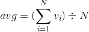

Semantics¶
Primitive functions¶
A primitive is a built-in function for fundamental operations. There are various kinds of primitives in ELI.
- Basic arithmetic functions.
+ - * % - Functions for array manipulation.
- Object related functions. These function is eligible to operate on objects, such as lists and tables.
User defined functions¶
This (UDF) allows programmers to define a function and use it afterwards. ELI inherits the design from APL which takes parameters from both left and right sides. A basic UDF is shown as follows.
@.z<-foo x
z<-x+1
@.
The method foo takes one parameter x and saves x+1 to z as returned value.
- If pass one parameter
x, the function isfoo x - If pass two parameters
xandy, the function isy foo x - If pass zero parameter, the function is as simply as
foo
Note
- The method
fooshould be declared in the script mood. Otherwise, the interpreter can’t recognize the method - The execution order is always from right-to-left. So the argument on the right-hand side is evaluated first and the left-hand side follows
Short functions¶
The format of short functions is
{foo:line0;...;lineN} where
{foo} is the function name and
{line0;...;lineN} is the body of the function. There
are some implicit rules defined as follows.
- If the literal
xappears, it is the right argument of the function - If the literal
yappears, it is the left argument of the function - If the literal
zappears, it is the return value of the function - Other names appear other than functions are localized as variables
- If the last line (lineN) is not empty, the result of the line is returned
- If the last line (lineN) is empty, nothing will be returned if
zdoes not appear
A large program usually consists of many small functions which operate
basic computation, such as avg (See the equation below) which
returns the average of a vector or an array.
For example, avg !20 takes a vector
consists of twenty numbers from 1 to 20. The expected result should be
10.5.

The function avg can be defined in ELI interpreter
quickly and easily as follows.
{avg: (+/x)%#x}
avg
avg !20
10.5
{avg} //check code
---------avg--------
[0] z<-avg x
[1] z<-(+/x)%#x
--------------------
The short functions usually are defined for these functions with one line code. It provides more feasibility for fast programming to implement bright ideas. Ideally, it reduces the time cost to create a normal script files to load to active workspace.